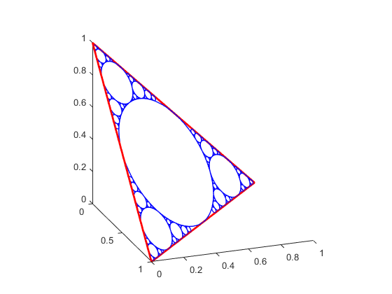
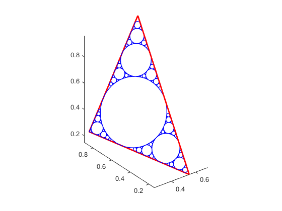
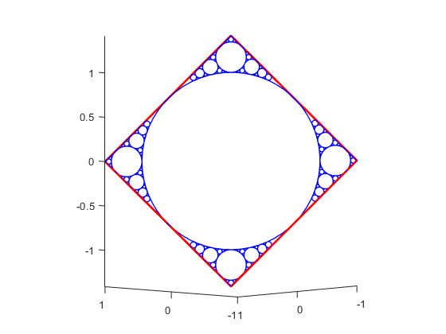
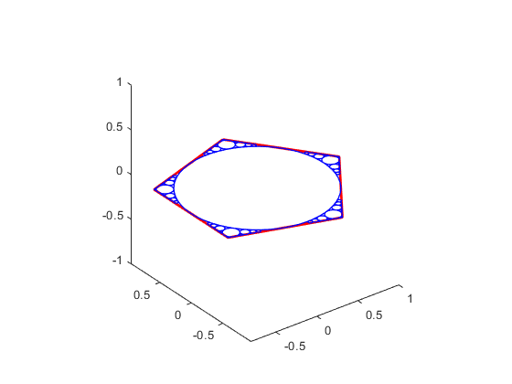
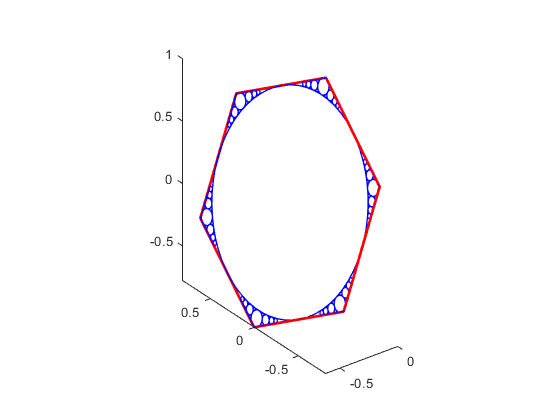

apollonian_polygon_based_gasket
Function to compute, display, and save the apollonian gasket of any 3D triangle or 3D regular polygon at any iteration.
Author & support : nicolas.douillet (at) free.fr, 2023.
Contents
Syntax
apollonian_polygon_based_gasket(P, nb_it, nb_samples);
apollonian_polygon_based_gasket(P, nb_it, nb_samples, option_display);
[R, I, r] = apollonian_polygon_based_gasket(P, nb_it, nb_samples, option_display);
Description
apollonian_polygon_based_gasket(P, nb_it, nb_samples) compute and display the apollonian gasket of the polygon P at iteration #nb_it and using nb_samples for each circle.
apollonian_polygon_based_gasket(P, nb_it, nb_samples, option_display) displays the result (polygon + circles) when option_display is set to logical *true/1 (default), and doesn't when it is set to logical false/0.
[R, I, r] = apollonian_polygon_based_gasket(P, nb_it, nb_samples, option_display) save the result (coordinates of every circles) in the array R.
See also
| triangle_incircle | regular_3D_polygon_incircle | line_plane_intersection | point_to_line_distance | platonic_solids | apollonian_2D |
Input arguments
[-Mx-]
- M = [-My-] : real matrix double. size(M,1) = 3. size(M,2) is the number of vertices of your polygon.
[-Mz-]- nb_it : integer scalar, the number of iterations to perform.
- nb_samples : integer scalar, the number samples for each circle.
- option_display : either logical, *true/false or numeric *1/0.
Output arguments
- R : real matrix double. The apollonian circles coordinates. size® = [3, nb_samples, numel(r)], where numel(r) is the number of resulting circles.
[-Ix-]
- I = [-Iy-] : real matrix double. Coordinates of the sampled apollonian circles. size(R) = [3, numel(r)].
[-Iz-]r : real vector double. The apollonian circles radii / radius vector.
Example #1
Equilateral triangle of the 3D space
nb_it = 3; nb_samples = 64; P = eye(3); apollonian_polygon_based_gasket(P, nb_it, nb_samples, true); view(70,21);
Example #2
Random triangle of the 3D space
P = rand(3,3); apollonian_polygon_based_gasket(P, nb_it, nb_samples, true);
Example #3
Square/rhombus of the 3D space
V1 = [1 1 0]'; V2 = [0 0 sqrt(2)]'; V3 = [-1 -1 0]'; V4 = [0 0 -sqrt(2)]'; P = cat(2,V1,V2,V3,V4); apollonian_polygon_based_gasket(P, nb_it, nb_samples, true); view(-132,-5);
Example #4
Pentagon of the 2D space
P = [cos(0.4*pi) cos(0.8*pi) cos(1.2*pi) cos(1.6*pi) cos(2*pi);
sin(0.4*pi) sin(0.8*pi) sin(1.2*pi) sin(1.6*pi) sin(2*pi);
0 0 0 0 0 ];
apollonian_polygon_based_gasket(P, nb_it, nb_samples, true);
 Example #5
Hexagon of the 3D space
V1 = [-sqrt(2)/3 sqrt(6)/3 -1/3]'; V3 = [-sqrt(2)/3 -sqrt(6)/3 -1/3]'; V5 = [0 0 1]'; V2 = (2/3)*(V1+V3) - (1/3)*V5; V4 = (2/3)*(V3+V5) - (1/3)*V1; V6 = (2/3)*(V1+V5) - (1/3)*V3; P = cat(2,V1,V2,V3,V4,V5,V6); apollonian_polygon_based_gasket(P, nb_it, nb_samples, true);